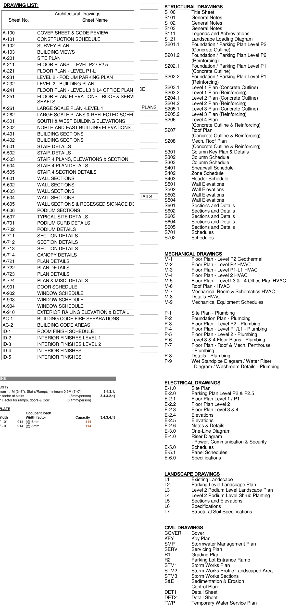
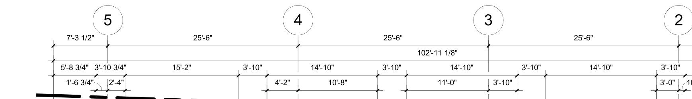
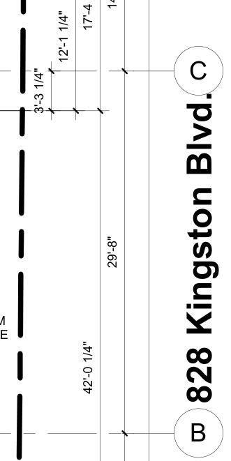
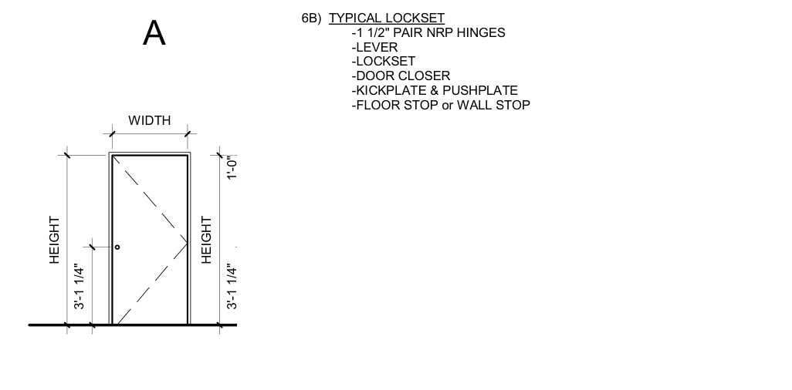

Why this matters on the job
On a real job nobody hands you one tidy drawing. You get a set, a question and a deadline. You have to find the right sheets, follow the marks from one sheet to the next, read the schedules, do the math with the written dimensions, and notice when two sheets do not agree. That is what this capstone asks you to do, on a real set.
This lesson pulls together: - Reading lesson 05: title block, legend, schedules, notes and "do not scale" - Reading lessons 11 (views), 12 (pictorial drawings), 13 (lines and dimensions), 14 (scales) and 15 (sections, details and callouts) - Reading lesson 16: title blocks, sheet sets and the drawing list - Reading lesson 17: symbols, legends, grids and schedules - Numeracy lesson 11 and Numeracy lesson 13: fractions, converting to metric, and area
The job
You are on the crew that will fit out the Level 4 washrooms at London Square, a mixed-use building at 828 Kingston Blvd. The set is imperial (feet and inches). The firm names on it, such as Athena Architecture Ltd. and Oslo Mechanical, are made up (fictional). The drawings are real.
Your foreman wants a short report before the crew starts: - which sheets you need - the grid layout and one bay area - the floor heights and the wall build-up at the east wall - the washroom doors and fixtures - anything on the drawings that does not add up
How to work through a set
- Start at the drawing list. Write down every sheet you think you need.
- Check each title block. Note the scale and the latest issue.
- Find your area on the plan by grid lines. Read the written dimensions.
- Follow every marker. A section mark sends you to a section. A callout on the section sends you to a wall section or detail.
- Follow every tag to its schedule. Door tags to the door schedule, wall tags to the wall types, fixture tags to the plumbing sheets.
- Check the trades against each other. The plumbing plan and the architectural plan should show the same fixtures.
- Write down anything that does not agree, and ask in writing before you build.
Worked example
Question: What is the scale of the Level 4 plan, and how long would the 25'-6" bay between grids 4 and 3 be on a full-size print?
- The A-241 title block says "As indicated" (lesson 16, Figure 4). So look under the plan. The view title in Figure 2 says LEVEL 4, 1/8" = 1'-0".
- At 1/8" = 1'-0", every foot is drawn 1/8" long.
- 25'-6" = 25.5 feet. 25.5 × 1/8" = 25.5 ÷ 8 = 3.1875".
- 0.1875" = 3/16" (3 ÷ 16 = 0.1875). So the bay is drawn 3 3/16" long on a full-size print.
- That is only a check. London Square project note 3 says no dimension shall be taken (scaled) from the drawings. Build to the written 25'-6".
The drawing set
Tap a figure to open it full size, then zoom in. Figure 1 is the same drawing list used in lesson 16.




![The core of the Level 4 plan. The women's washroom 403 has two sinks on the left wall, two toilets in stalls and one accessible toilet, with door tag 403. The men's washroom 404 has two sinks on the right wall, two urinals and one accessible toilet, with door tag 404. A callout 2 over A-262 circles both washrooms. Below are stair 1 and stair 2 with door tags 4ST2 and 4ST1, the mechanical shaft with door 401, the elevator shaft and electrical room 402 with door 402. On the right, unit 406 and unit 405, window tags W12b, W12a, W22 and W18b, and markers 08 over A-602, 07 over A-602, 01 over A-401, 06 over A-602 and 02 over A-401.](figures/ls-a241-core.png)


![The London Square door schedule header and the rows from 3ST2 (Level 3) to 404 (Level 4). Columns: level, mark, location, width, height, hardware type, hardware finish, door type, door material, door finish, frame material, frame finish, fire rating. Level 4 rows: 4ST1 Stair #1 3'-0" by 7'-0", 3A, type A, B, 1.5 HR. 4ST2 Stair #2 3'-0" by 7'-0", 3B, 1.5 HR. 401 Mechanical shaft access 2'-6" by 7'-0", 1C, 1.5 HR. 402 Electrical closet 5'-0" by 7'-0", 1D, 2 x A, no rating. 403 Womens WC 3'-0" by 7'-0", 6B, type A, door type A, PS, PT, PS, PT, no rating. 404 Mens WC 3'-0" by 7'-0", 6B, type A, door type A, PS, PT, PS, PT, no rating.](figures/ls-a901-door-schedule-l3-l4.png)



Tasks
Part A: find your sheets (level 2)
Task 1 (level 2) Use Figure 1. Write the sheet number for each thing the crew needs. a) The Level 4 floor plan b) The building sections c) The door schedule d) The wall, floor and roof assemblies (careful: look at the name of A-101) e) The plumbing plan for Levels 3 and 4 f) The plumbing washroom details g) The electrical floor plan for Levels 3 and 4
Task 2 (level 2) Use Figures 2, 7 and 13. a) What is the scale of the Level 4 plan? Of wall section 07? b) Which plumbing sheets in Figure 13 are not to scale? What does N.T.S. tell you about measuring them?
Part B: grids, dimensions and scale (level 2)
Task 3 (level 2) Use Figures 2 and 3. a) How far is it from grid 5 to grid 2? Show your adding. b) On a full-size print at 1/8" = 1'-0", how long is the 29'-8" bay between grids C and B (Figure 4)? Give your answer to the nearest 1/16".
Task 4 (level 2) A drywall crew is pricing an open office bay. Use Figures 3 and 4. The bay runs from grid 4 to grid 3 and from grid C to grid B. a) What is the area of the bay, measured grid to grid, in square feet? b) Convert it to square metres. (1 foot = 304.8 mm.) Round to one decimal.
Part C: follow the marks (level 2)
Task 5 (level 2) Use Figures 5 and 6. a) On the plan, what does the marker "01 over A-401" near grid D tell you? b) On Building Section 1, what is the elevation of Level 4? Of Level 3? c) What is the floor-to-floor height from Level 3 to Level 4? Check it by subtracting the two elevations. d) What is the floor-to-floor height from Level 4 to the roof?
Task 6 (level 2) Use Figures 5, 6, 7 and 8. You are a framer working on the east wall. a) On Building Section 1, which callout sends you to a wall section? On which sheet? b) What is the full title and scale of that wall section? c) Which wall type tag is on the wall between Level 3 and Level 4? d) List the layers of that wall type from outside to inside. What is its total thickness, not counting the poly?
Part D: doors and fixtures (level 2)
Task 7 (level 2) Use Figures 5, 9 and 10. You are hanging door 403. a) What room is door 403, and what size is it? Give the size in millimetres too (1 inch = 25.4 mm). b) What hardware type, door type and fire rating does it have? c) List the hardware in that hardware type. d) Door 402 is listed with door type "2 x A". What do you think that means?
Task 8 (level 2) Use Figures 5 and 11. You are a plumber taking off fixtures for Level 4. a) Count the toilets, urinals and basins in the women's washroom 403 and in the men's washroom 404. Fill in the table.
| Room | Toilets (WC) | Urinals (U) | Basins (WB) | Floor drains |
|---|---|---|---|---|
| 403 Women's | ||||
| 404 Men's | ||||
| Total |
b) Does the architectural plan (Figure 5) show the same fixtures as the plumbing plan (Figure 11)? c) What kind of floor drain is FD-1, and what size is its strainer? (Figure 13)
Part E: check the set (level 3)
Task 9 (level 3) Use Figures 2, 6 and 12. a) The left plan on P-6 is titled "Level 3". Which unit numbers and which floor elevation does it show? b) Which level does that floor elevation belong to on Building Section 1? (276.17 feet = 276'-2".) c) What is wrong on P-6, and why does it matter to a plumber? d) Write a short request for information (RFI) to the mechanical engineer. Say what you found, on which sheets, and what you need.
Task 10 (level 3) Use Figures 2, 5 and 7. a) Wall section 07 is titled "Wall - EAST - Brick Pier @ 137th St." What address does the plan show beside the east side of the building? b) How do you still know which wall section 07 is? Name the mark on the plan that points to it. c) What would you do about the street name?
Task 11 (level 3) Put it all together. Write a short job card for the foreman for the women's washroom 403 on Level 4. Use at least five sheets. Include: - the door: mark, size, door type, hardware type - the fixtures and floor drain, with their tags - the floor-to-floor height of Level 4 (to the roof) - the sheets you used - one thing you would ask about before starting
Check yourself
- Where do you start when you get a new drawing set?
- A plan shows "07 over A-602". What do you do next?
- Why do you add written dimensions instead of measuring the print?
- Two trades' sheets show different things for the same room. What do you do?
- What makes an RFI clear enough that the designer can answer it fast?